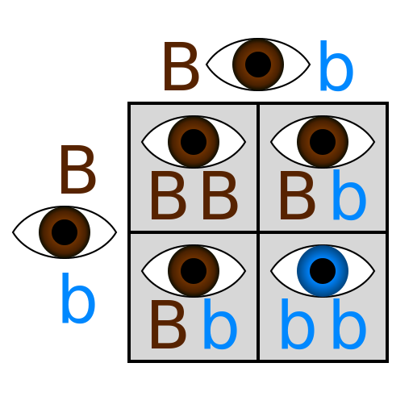
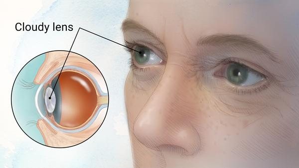

The eye is an organ of the visual system. They allow the subject to see by detecting varying levels of light and converting that light into impulses. Eyes come in many different shapes and colors, but are often defined by genetics.
 Punnett square explaining how eye color-related genetics works on a simple scale.However, there are cases where the eyes get damaged, and as a result, get injured, leaving the host visually impaired. Common causes are refractive errors, cataracts, glaucoma, trachoma, age, and genetics.
 On left: Drawn anatomy of cataracts. On right: Example of tunnel vision.Visual impairment isn't solely solvable through means such as glasses. Often times, physical therapy or surgery is needed to correct these disabilities. Sometimes, they may be unchangeable with our current technology. These people are labeled "legally blind" in the United States, due to them almost always having a vision of worse than 20/200.
Educational animation on the anatomy of the eye.As a certain All Star Code cohort would say, the eye is:
"Simple in its complexity, yet complex in its simplicity."